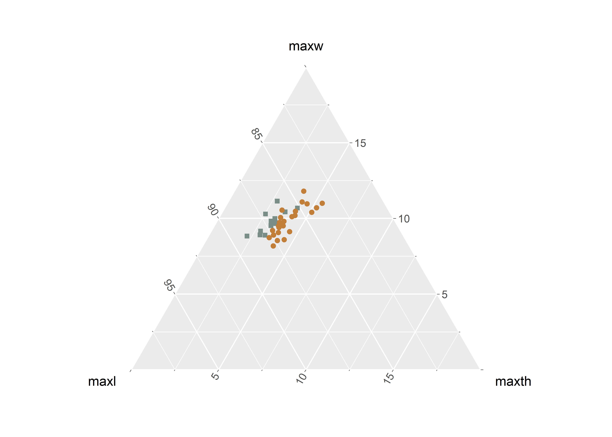

Chapter 1 Linear metrics by site
# install required analysis packages
#devtools::install_github("tidyverse/tidyverse")
#devtools::install_github("mlcollyer/RRPP")
#devtools::install_github("kassambara/ggpubr")
#devtools::install_github("sinhrks/ggfortify")
#devtools::install_git('https://bitbucket.org/nicholasehamilton/ggtern')
#devtools::install_github("karthik/wesanderson")
#devtools::install_github("daattali/ggExtra")
# load libraries
library(tidyverse)## -- Attaching packages ------------------- tidyverse 1.3.1.9000 --## v ggplot2 3.3.5 v purrr 0.3.4
## v tibble 3.1.6 v dplyr 1.0.8
## v tidyr 1.2.0 v stringr 1.4.0
## v readr 2.1.2 v forcats 0.5.1## -- Conflicts --------------------------- tidyverse_conflicts() --
## x dplyr::filter() masks stats::filter()
## x dplyr::lag() masks stats::lag()library(RRPP)
library(ggpubr)
library(ggfortify)
library(ggtern)## Registered S3 methods overwritten by 'ggtern':
## method from
## grid.draw.ggplot ggplot2
## plot.ggplot ggplot2
## print.ggplot ggplot2## --
## Remember to cite, run citation(package = 'ggtern') for further info.
## --##
## Attaching package: 'ggtern'## The following objects are masked from 'package:ggplot2':
##
## aes, annotate, ggplot, ggplot_build, ggplot_gtable,
## ggplotGrob, ggsave, layer_data, theme_bw,
## theme_classic, theme_dark, theme_gray, theme_light,
## theme_linedraw, theme_minimal, theme_voidlibrary(cluster)
library(wesanderson)
library(ggExtra)1.1 Set working directory, load data, and define variables
# set working directory
setwd(getwd())
data <- read.csv("linear.csv", header = TRUE, as.is=TRUE)
# define variables
maxl <- data$length # maximum length
maxw <- data$width# maximum width
maxth <- data$thickness # maximum thickness
site <- data$site # site name1.2 Boxplots for variable by site
# boxplot of maximum length ~ site
sitemaxl <- ggplot(data, aes(x = site, y = maxl, color = site)) +
geom_boxplot() +
geom_dotplot(binaxis = 'y', stackdir = 'center', dotsize = 0.3) +
scale_colour_manual(values = wes_palette("Moonrise2")) +
theme(legend.position = "none") +
labs(x = 'Site', y = 'MaxL')
# boxplot of maximum width ~ site
sitemaxw <- ggplot(data, aes(x = site, y = maxw, color = site)) +
geom_boxplot() +
geom_dotplot(binaxis = 'y', stackdir = 'center', dotsize = 0.3) +
scale_colour_manual(values = wes_palette("Moonrise2")) +
theme(legend.position = "none") +
labs(x = 'Site', y = 'MaxW')
# boxplot of maximum thickness ~ site
sitemaxth <- ggplot(data, aes(x = site, y = maxth, color = site)) +
geom_boxplot() +
geom_dotplot(binaxis = 'y', stackdir = 'center', dotsize = 0.3) +
scale_colour_manual(values = wes_palette("Moonrise2")) +
theme(legend.position = "none") +
labs(x = 'Site', y = 'MaxTh')
# render figure
sitefigure<-ggarrange(sitemaxl,sitemaxw,sitemaxth,
labels = c("a","b","c"),
ncol = 2, nrow = 2)## Bin width defaults to 1/30 of the range of the data. Pick better value with `binwidth`.
## Bin width defaults to 1/30 of the range of the data. Pick better value with `binwidth`.
## Bin width defaults to 1/30 of the range of the data. Pick better value with `binwidth`.# plot figure
sitefigure
Figure 1.1: Boxplots for maximum length, width, and thickness for Jowell knives from 41AN13 and 41HS261.
1.3 Ternary plot
#attributes for plot
df <- data[c(3:5)]
pch.gps.gp <- c(15,19)[as.factor(site)]
col.gps.gp <- wes_palette("Moonrise2")[as.factor(site)]
# load data
tern <- ggtern(data = data, aes(maxl, maxw, maxth)) +
geom_point(shape = pch.gps.gp, col = col.gps.gp) +
scale_T_continuous(limits = c(0, 0.2)) +
scale_L_continuous(limits = c(0.8, 1)) +
scale_R_continuous(limits = c(0, 0.2))
# render plot
tern
1.4 Principal Components Analysis for site
#pca
pca <- autoplot(prcomp(df),
data = data,
asp = 1,
shape = pch.gps.gp,
colour = 'site',
loadings = TRUE,
loadings.colour = 'blue',
loadings.label = TRUE,
loadings.label.size = 3,
frame = TRUE) +
scale_fill_manual(values = wes_palette("Moonrise2")) +
scale_colour_manual(values = wes_palette("Moonrise2"))
ggMarginal(pca, groupColour = TRUE, groupFill = TRUE)
Figure 1.2: Principal Components Analysis by site.
1.5 Analyses of Variance (ANOVA) for variable ~ site
1.5.1 Maximum length of Jowell knives
# anova = maximum length ~ site
siteml <- lm.rrpp(maxl ~ site,
SS.type = "I",
data = data,
iter = 9999,
print.progress = FALSE)
anova(siteml)##
## Analysis of Variance, using Residual Randomization
## Permutation procedure: Randomization of null model residuals
## Number of permutations: 10000
## Estimation method: Ordinary Least Squares
## Sums of Squares and Cross-products: Type I
## Effect sizes (Z) based on F distributions
##
## Df SS MS Rsq F Z Pr(>F)
## site 1 38.4 38.369 0.00719 0.2607 -0.26426 0.6095
## Residuals 36 5298.0 147.167 0.99281
## Total 37 5336.4
##
## Call: lm.rrpp(f1 = maxl ~ site, iter = 9999, SS.type = "I", data = data,
## print.progress = FALSE)1.5.2 Maximum width of Jowell knives
# anova = maximum width ~ site
sitemw <- lm.rrpp(maxw ~ site,
SS.type = "I",
data = data,
iter = 9999,
print.progress = FALSE)
anova(sitemw)##
## Analysis of Variance, using Residual Randomization
## Permutation procedure: Randomization of null model residuals
## Number of permutations: 10000
## Estimation method: Ordinary Least Squares
## Sums of Squares and Cross-products: Type I
## Effect sizes (Z) based on F distributions
##
## Df SS MS Rsq F Z Pr(>F)
## site 1 0.017 0.01743 0.00032 0.0114 -1.4518 0.9166
## Residuals 36 55.019 1.52832 0.99968
## Total 37 55.037
##
## Call: lm.rrpp(f1 = maxw ~ site, iter = 9999, SS.type = "I", data = data,
## print.progress = FALSE)1.5.3 Maximum thickness of Jowell knives
# anova = maximum thickness ~ site
sitemth <- lm.rrpp(maxth ~ site,
SS.type = "I",
data = data,
iter = 9999,
print.progress = FALSE)
anova(sitemth)##
## Analysis of Variance, using Residual Randomization
## Permutation procedure: Randomization of null model residuals
## Number of permutations: 10000
## Estimation method: Ordinary Least Squares
## Sums of Squares and Cross-products: Type I
## Effect sizes (Z) based on F distributions
##
## Df SS MS Rsq F Z Pr(>F)
## site 1 14.337 14.3372 0.44578 28.957 3.7033 1e-04 ***
## Residuals 36 17.825 0.4951 0.55422
## Total 37 32.162
## ---
## Signif. codes: 0 '***' 0.001 '**' 0.01 '*' 0.05 '.' 0.1 ' ' 1
##
## Call: lm.rrpp(f1 = maxth ~ site, iter = 9999, SS.type = "I", data = data,
## print.progress = FALSE)